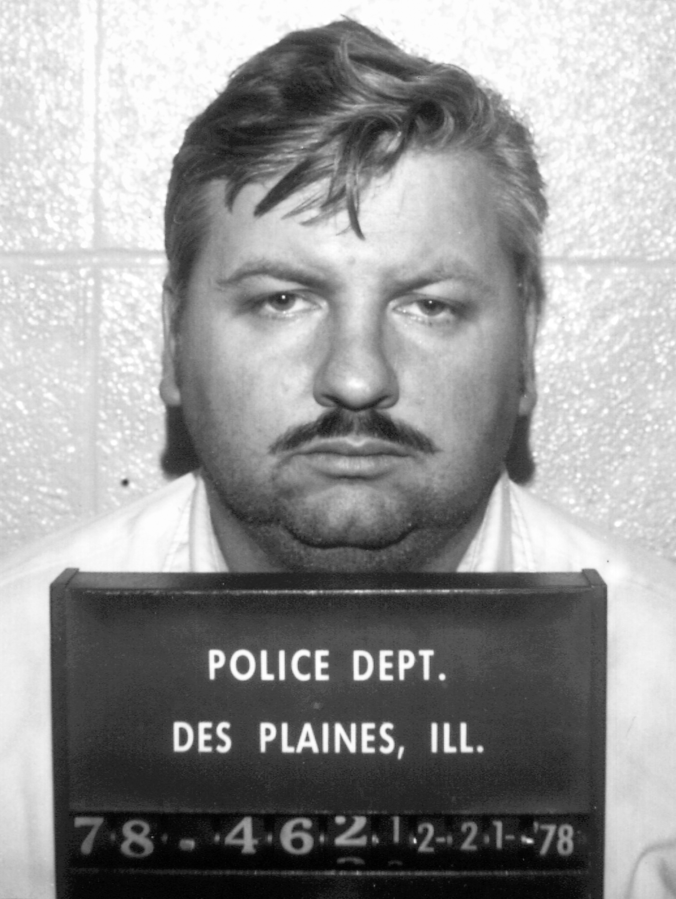
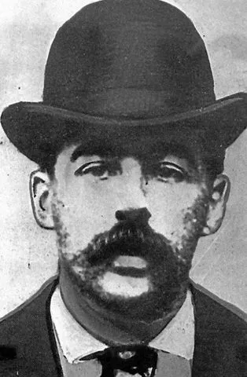
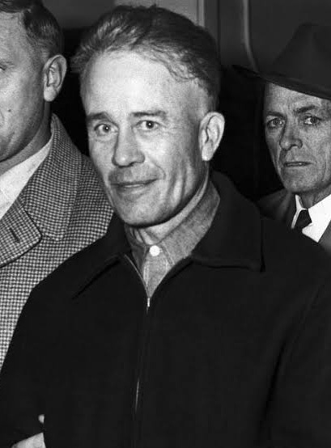

Ted Bundy
American serial killer active in the 1970s known for manipulation and multiple confirmed victims.
American serial killer active in the 1970s known for manipulation and multiple confirmed victims.
Infamous Milwaukee killer responsible for crimes between 1978–1991 involving multiple victims.

Known as the “Killer Clown,” responsible for murders in Illinois during the 1970s.

Unidentified serial killer active in London’s Whitechapel district in 1888.

Grave robber and murderer whose crimes inspired major horror characters.
“Night Stalker” who terrorised California in the mid-1980s.